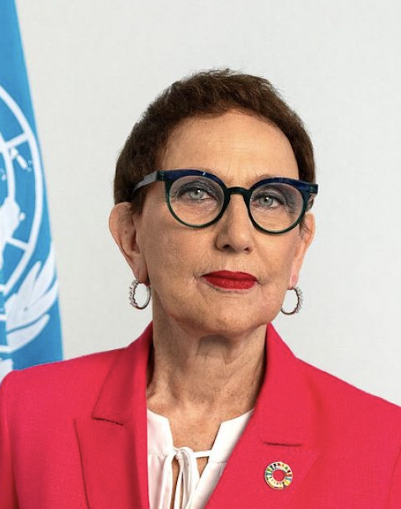
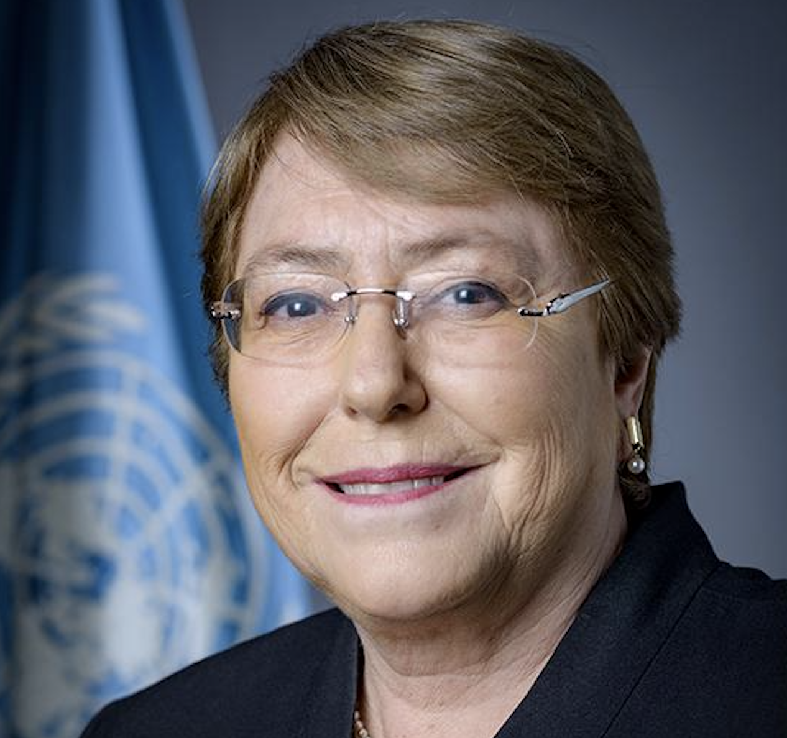
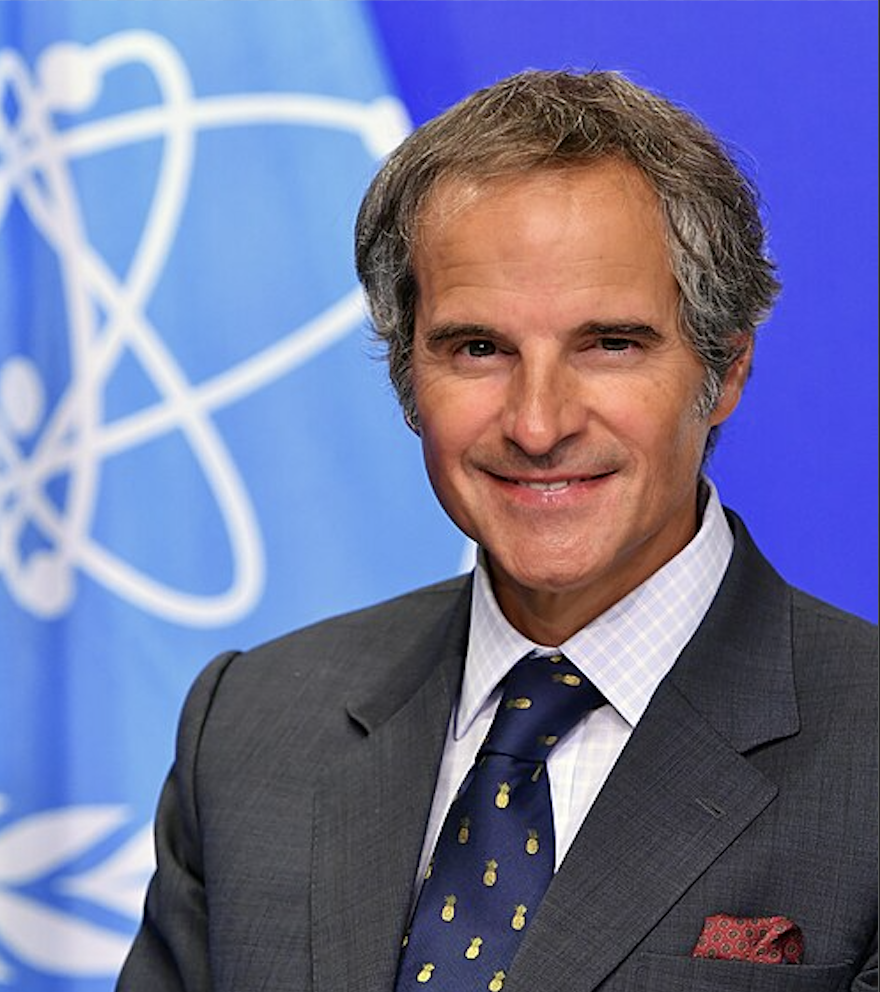
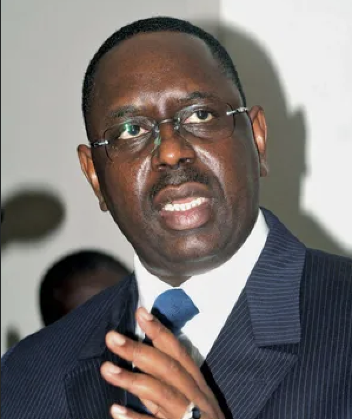
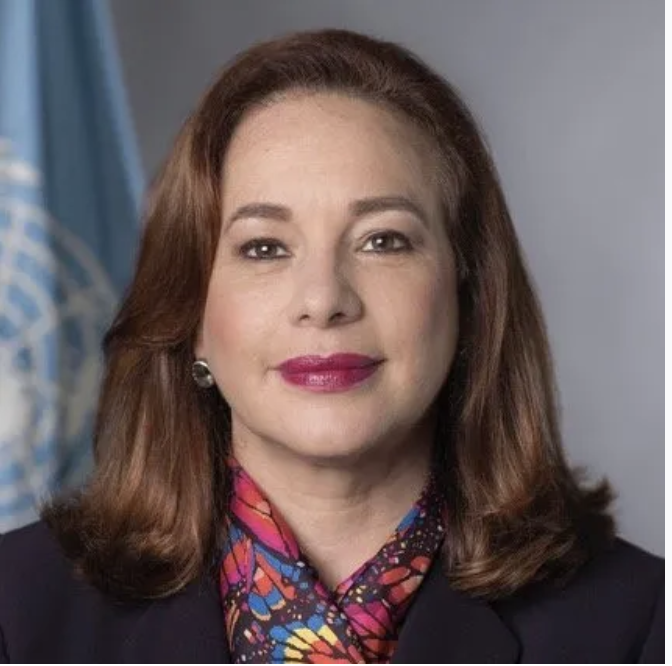
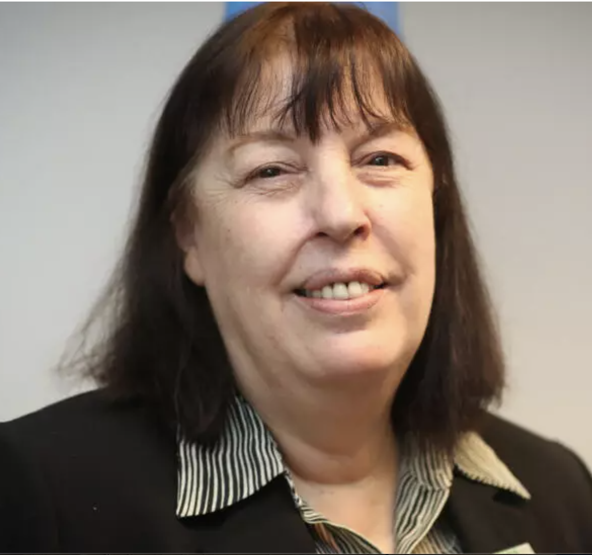

Biographies & Vision Statements
Three active candidates remain following two withdrawals in late March 2026. Interactive dialogues with the General Assembly and Security Council are scheduled for 20 April 2026.

Rebeca Grynspan
- First woman to lead UNCTAD; mandate extended 2025
- Former Vice President of Costa Rica
- Senior roles at UNDP and the Ibero-American General Secretariat (SEGIB)
- Trained economist; built profile in development, inequality, and multilateral finance
- Nominated by Costa Rica (letter from President Rodrigo Chaves, Oct 2025)
"The UN must welcome reform instead of being defensive about it." Grynspan frames Trump-era criticism as a stimulus for change, calls for a UN more responsive to developing countries' concerns on debt, inequality and trade, and pledges "reform to rebuild trust" with both powerful and smaller states.
Technocratic, development-focused; potential first woman SG from Latin America. Seen as a "safe" moderate-reform choice. Lacks the "crisis manager" profile of Grossi.
No major personal scandals. Some analysts portray her as incremental rather than transformational — a perception critique rather than a formal controversy. Campaign described as "modest" with no special budget.

Michelle Bachelet
- Twice President of Chile (2006–2010; 2014–2018) — first female president
- Executive Director of UN Women (2010–2013)
- UN High Commissioner for Human Rights (2018–2022)
- Medical doctor with specialized training
- Jointly nominated by Chile, Brazil & Mexico (2 Feb 2026); formal vision statement filed as A/80/616
- Chile withdrew support 24 Mar 2026 — President Kast cited "fragmentation of Latin American candidacies" and "significant cost" to Chile. Brazil and Mexico remain co-sponsors; Bachelet stays in the race.
Frames the world as facing a "crisis of values and cooperation." Pledges to deliver "concrete, efficient, and sustainable results for peace, development, and human rights." Calls for the SG to combine "loyalty to founding principles with the courage to adapt its internal mechanisms." Stresses rebuilding trust through equality among member states.
Moral authority; human-rights and gender champion with head-of-state experience. Strong regional backing from the three largest Latin American economies. Described as a "normatively rights-centered" candidacy.
Faced criticism over handling of the Xinjiang report (2022) — critics argued she was too cautious toward China, defenders cited political constraints. This controversy is expected to be exploited in P5 veto politics by some actors.
24 Mar 2026: Chile's new President Kast withdrew Chile's official backing, calling the bid "unviable" due to fragmentation of Latin American candidacies. Brazil and Mexico remain co-sponsors. Grynspan's bid described as surging in response.

Rafael Mariano Grossi
- IAEA Director-General since 2019, re-elected 2023
- Veteran Argentine diplomat; senior nuclear-diplomacy posts, including ambassadorial roles
- Led high-risk IAEA missions to nuclear facilities in Ukrainian conflict zones
- Formally nominated by Argentina (26 November 2025)
- Continues to serve as IAEA DG during campaign; stated he will not resign during the race
"We need a secretary-general who puts on their boots and goes where the problem is." Calls for a "bold reformist vision" for a "malfunctioning" UN; wants a UN that "rediscovers its founding values, tackles bureaucracy and acts decisively." Pledges to privilege "multilateralism over unilateralism" and deliver "concrete solutions."
Pragmatic crisis manager and reformist technocrat. Described in some commentary as an early frontrunner with perceived acceptability across multiple P5 members. Hands-on leadership style praised widely.
Argentina's President Milei has attacked parts of the UN agenda (SDGs, Pact for the Future), creating a political optics challenge. Some observers question whether Milei's anti-UN rhetoric could complicate Grossi's candidacy, though this is contextual rather than a personal controversy.

Macky Sall
- President of Senegal 2012–2024; previously Prime Minister
- Chaired the African Union; led mediation in regional crises
- Advocated for global financial reform, debt restructuring, and energy transition
- Trained geological engineer
- Nominated by Burundi as AU chair, on behalf of Senegal (early March 2026)
Formal vision statement not yet publicly filed as of March 2026. Campaign framed around African representation, infrastructure, economic reform, AU chairmanship experience, and climate diplomacy. Analysts expect emphasis on climate justice, loss-and-damage funding, and Sahel security-climate nexus.
African power-broker. Bid framed as a test of Africa's claim to the post after Kofi Annan, and of P5 veto politics. Seen as embodying the "Africa's turn" narrative, contingent on AU consolidation behind him.
Third-term controversy and handling of protests in later presidential years drew significant criticism from domestic opposition and human rights groups. Some member states prioritizing democratic norms may view this record with concern.
27 Mar 2026: The African Union Bureau's attempt to endorse Sall via a "silence procedure" collapsed when 20+ member states broke silence before the deadline. Countries objecting included South Africa, Nigeria, Algeria, Egypt, Rwanda, Ethiopia, Senegal itself, and others. The AU will NOT officially endorse him as Africa's candidate. Sall announced he will continue his candidacy regardless. His own government (Senegal) never supported his nomination. — APAnews, Amani Africa, Morocco World News, Seneweb

María Fernanda Espinosa
- Former Minister of Foreign Affairs of Ecuador
- Former Minister of National Defense of Ecuador
- President of the 73rd UN General Assembly (2018–2019)
- Negotiated Indigenous land rights in the Ecuadorian Amazon; 30+ years in multilateral diplomacy
- Nominated by Antigua and Barbuda on 12 May 2026 — 5th active candidate (not nominated by her own country)
- Ecuador's government has not confirmed tacit support; Espinosa states she has been outside Ecuadorian national politics for 8 years
Platform centers on a "new financing compact" to help member states understand the value of UN budgets, and rethinking the SDG delivery model. "The UN should not be delivering development projects on the ground, but supporting countries to increase their capacities, their access to resources, their access to technology." Proposes tackling the UN liquidity crisis directly — noted by observers as the only candidate to explicitly address it with concrete ideas.
Third woman in the race alongside Bachelet and Grynspan. Described as a "Global South" candidate with multilateral institutional experience, particularly in UNGA presidency. Small-state nomination (Antigua and Barbuda) limits initial political capital. PassBlue interview (May 19) characterised her platform as the most explicit on UN finance reform.
Cross-national nomination (by Antigua and Barbuda, not Ecuador) mirrors the Sall/Gamba pattern — raises questions about home-country backing and regional base. Xinhua (Chinese state media) covered her nomination prominently on May 13, which may signal Chinese interest. Vision statement filed May 12 with UN SG selection page.

Virginia Gamba
- UN Under-Secretary-General for Children and Armed Conflict (2017–2025)
- UN USG for Prevention of Genocide (2024–2025)
- Argentine diplomat with 30+ years in the UN system
- Formally nominated by the Maldives on 11 March 2026 — fifth declared candidate
- Argentina's own government has backed Rafael Grossi
- ⚠ Withdrawn 26–27 March 2026: The Maldives withdrew its nomination without explanation. Her candidacy is ended. Field narrows to four nominally active candidates.
Not yet publicly filed as of 16 March 2026. Campaign focus areas are expected to be child protection, atrocity prevention, and UN reform. Interactive dialogue scheduled for week of 20 April 2026.
Newest entrant. Nominated by a small island state (Maldives) rather than her home country, which has already backed Grossi. Profile is humanitarian and protection-focused rather than geopolitical. Considered a long-shot at this stage.
Her candidacy creates a split with Argentina's official position. President Milei's government backs Grossi. Gamba's nomination by the Maldives is unusual and may limit her ability to attract major bloc support.
Comparative Issue Positions
Positions inferred from campaign statements, prior roles, and analyst commentary. Stance badge indicates evidential basis: Direct = explicit campaign statement; Inferred = extrapolated from prior role; Not stated = no public position recorded.
| Issue | 🇨🇷 Grynspan | 🇨🇱 Bachelet | 🇦🇷 Grossi | 🇸🇳 Sall | 🇪🇨 Espinosa | 🇦🇷 Gamba |
|---|---|---|---|---|---|---|
| Climate Change | Inferred Links climate action to trade, finance, and inequality. Argues developing countries need fairer financial conditions for green transitions. Costa Rica's nomination highlights her alignment with climate-conscious multilateralism. |
Direct Frames climate as "the greatest threat to human rights." Vision statement foregrounds "integrated climate action." Argues climate policy is a tool for conflict prevention and poverty eradication. |
Inferred Frames nuclear energy as part of climate mitigation and low-carbon power. Argues climate policy needs science-based solutions. Explicit SG-campaign climate pledges are limited in open reporting. |
Inferred As AU chair, pressed for recognition of African gas as a "transition fuel" and stronger adaptation finance. Expected to focus on climate justice, loss-and-damage, and the Sahel security-climate nexus. |
Inferred Ecuador's strong biodiversity and green-economy tradition provides contextual alignment. Espinosa's platform emphasises development finance reform as the pathway to climate action. No explicit SG-campaign climate pledges beyond this framing. |
Not Yet Stated |
| Gender Equality | Direct "We are agents of change, not merely a vulnerable group." Stresses that sustainable peace "cannot be achieved without the full and meaningful participation of women." Goal is "not merely seeking a seat at the table, but to reshape the table." |
Direct Gender equality is a core stated priority. Vision statement argues it is essential to "build more just, peaceful, and resilient societies." Long record championing ending violence against women and women's full participation. |
Inferred Launched IAEA's Marie Sklodowska-Curie Fellowship Programme; promoted gender parity in the nuclear field. Analysts cite his elevation of women in technical diplomacy. Explicit SG-bid gender statements are limited. |
Not Stated | Direct Gender equality is central to her candidacy — she served as executive director of the organisation campaigning for the UN's first female SG. Frames her own candidacy as advancing gender parity at the top of the international system. |
Inferred Role as USG for Children and Armed Conflict focused on protection of girls in conflict. Likely to emphasise protection-based gender equality rather than structural reform agenda. |
| Human Rights | Inferred Links economic structures and inequality to rights outcomes. Frames women's vulnerability as a result of weakened rights. Supports inclusive trade and development policies compatible with economic and social rights. |
Direct Human rights must be "at the core of all UN action." Vision statement reaffirms "centrality of human rights in multilateral action" and calls the UN a "global reference for human dignity and social justice." |
Inferred More technocratic than rights-based. His insistence on nuclear safety in conflict zones has been framed as protecting civilian populations and international humanitarian norms — practical rights concern without explicit rights language. |
Cautious Domestic record has drawn human rights criticism (protests, political opposition treatment). Supporters point to AU mediation roles as conflict-prevention credentials. Likely vulnerability in a UN human-rights-focused environment. |
Inferred 30+ years in multilateral diplomacy with focus on equitable governance and inclusive development. Negotiated Indigenous land rights in Ecuador. No explicit SG-campaign rights manifesto, but multilateral track record implies broadly compatible position. |
Direct Core of her UN career: overseeing child rights in conflict and genocide prevention. Strong human rights credentials are central to her profile. |
| Peace & Security | Direct · Dialogue Apr 22 Peacemaking declared her top priority. Pledges early engagement, direct dialogue, and close SC coordination. Proposes merging DPPA and DPO planning (currently siloed). HQ must transmit field intelligence rather than block it. Black Sea Grain Initiative is her proof of concept for nimble, small-team mediation. Calls for clearer, more realistic peacekeeping mandates. Described UN as "too risk-conservative" — wants faster, bolder action. |
Direct · Dialogue Apr 21 "The UN must anticipate, prevent and unite." Next SG must be "physically present in the field." Links peace and security, development, and human rights into a coherent, preventive agenda. Emphasises addressing root causes — frames climate change as a conflict driver and human rights violation. |
Direct · Dialogue Apr 21 Led IAEA team to Zaporizhzhia nuclear plant during active conflict — his central credential. Negotiated directly with Russian and Ukrainian leaders as an impartial party when both sides were skeptical. "You need to be accepted by both sides — for that you need to be impartial." Would not wait for member states to task him — would proactively engage to forestall conflict. Called for constant SC partnership. |
Direct · Dialogue Apr 22 Peacekeeping is his signature issue, drawing on Senegal's major troop-contributing role. Calls for more robust and effective mandates. Operationalise Resolution 2719. Fully integrate the humanitarian-development-peace nexus. On Iran/US/Israel tensions: called for continued diplomacy and support for Pakistan-led mediation, urging all parties to maintain a ceasefire. "Bridge-builder" framing: restore trust, calm tensions, reduce fragmentation. |
Inferred No detailed peace and security platform published. UNGA presidency experience provides procedural multilateral credentials. Expected to emphasise preventive diplomacy and multilateral dialogue consistent with her broader platform. |
N/A — Withdrawn |
| Humanitarian Aid | Inferred Addresses humanitarian need through systemic change — debt restructuring, development finance, and structural inequality reduction. No detailed humanitarian reform manifesto specific to the SG bid. |
Inferred Links humanitarian concerns to rights and development. Vision statement pledges "concrete, efficient and sustainable results" for peace, development, and rights. Explicit humanitarian system reform proposals limited. |
Inferred Emphasises delivering "concrete solutions" in crises and activist SG presence in conflict areas — intersects with humanitarian operations. More implied than codified in a humanitarian-policy section. |
Inferred Sahel crisis engagement and developing-country advocacy imply humanitarian positioning. Emphasis on climate vulnerability and conflict prevention. Largely implicit in broader coverage rather than explicit pledges. |
Inferred Development-financing focus implies a structural rather than operational view of humanitarian need. Platform centres on enabling countries to better access resources — implicit humanitarian benefit, not a standalone humanitarian policy. |
Inferred Work with children in armed conflict directly intersects with humanitarian response. Expected to emphasise protection of civilians and humanitarian access. |
| UN Reform | Direct · Dialogue Apr 22 Most detailed structural reform agenda of any candidate. First acts: restructure the SG's executive office; merge DPPA and DPO planning capacities (currently "neither coherent nor coordinated"). HQ must be a conduit for field intelligence, not a wall blocking it. Clearer, more realistic peacekeeping mandates. Alternative vulnerability-based development metrics to replace GDP-only resource allocation. New UN financing arrangements. More representative Security Council. Calls UN "too risk-conservative." Black Sea Grain Initiative cited as model for nimble, small-team SG mediation. |
Direct · Dialogue Apr 21 Pledges gender parity at the UN Secretariat. Human rights explicitly elevated to equal standing with peace/security and development pillars — positioned as a prevention tool. Calls for improved civil society access to UN processes. Vision: "institutional reform with purpose" and "reconnecting with people." Climate as existential threat and human rights challenge. |
Direct · Dialogue Apr 21 Would treat Security Council as a "constant partner" — permanent open channel, proactive engagement, not waiting to be tasked. Open-door office with regular town halls for staff. Pledged to build on reform efforts from day one rather than restart. On SC expansion: "widespread recognition that African underrepresentation needs to be addressed" and "progressive convergence of views." Described his style: "you are not there to lecture — you are there to help find a solution." |
Direct · Dialogue Apr 22 Calls for stronger African representation on the Security Council. Operationalise Resolution 2719 (AU peacekeeping funding). Fully integrate the humanitarian-development-peace nexus. Renew and revitalise multilateralism. Strengthen UN governance structures. Treats all UN members equally while prioritising coordination with regional blocs. |
Direct Her signature issue. Proposes a "new financing compact" to clarify the value of UN budgets; argues the UN should support countries' capacity-building rather than deliver projects directly. Only candidate to explicitly address the UN liquidity crisis with concrete proposals. Noted by PassBlue as the most specific reform platform on finance. "There is no lack of money in the world." — PassBlue, May 19 2026. |
N/A — Withdrawn |
| Ukraine War / Russia | Direct Met FM Lavrov in Moscow, 7 April 2026 — the only publicly confirmed candidate-to-P5 FM bilateral meeting ahead of the dialogues. LinkedIn post: "We reaffirmed the importance of upholding the #UNCharter. I shared my perspective on how the Organisation can refocus its efforts, strengthen its effectiveness, advance necessary reforms." No explicit condemnation of Russia's invasion; engagement framed as SG-role neutrality. |
Inferred As OHCHR, condemned human rights violations in Ukraine and by Russia. SG campaign texts emphasise principles and international law rather than country-specific positions. Strong international law orientation viewed cautiously in Moscow. |
Direct Led IAEA missions to Zaporizhzhia under active conflict — negotiated with Russian and Ukrainian leaders simultaneously as an impartial party. His Ukraine engagement is his most visible credential. Favours pragmatic engagement under international law, not isolation or condemnation. |
Not Stated | Not Stated | N/A — Withdrawn |
| US Relations (Trump) | Direct Trump's UN criticisms "could be constructive rather than destructive." Argues the UN should listen and reform. Positions herself as seeking engagement with a sceptical US administration. |
Cautious As OHCHR, criticised US policies on migration and racial justice under Trump. SG vision reiterates that human rights should guide UN relations with all states. Strong rights profile creates latent friction. |
Inferred Worked closely with US administrations on nuclear verification and non-proliferation. Campaign coverage emphasises pragmatism and ability to work with powerful states. |
Inferred Cultivated US security and economic cooperation as president. Comfortable navigating great-power rivalries. No widely reported SG-campaign quotes specifically addressing the Trump administration. |
Not Stated | Not Yet Stated |
| China Relations | Inferred UNCTAD trade role intersects with China's economic presence in the Global South. Development-oriented multilateralism broadly compatible with China's priorities. No SG-campaign-specific China policy. |
Cautious OHCHR Xinjiang report drew China's strong criticism. Strong human rights profile is a known concern for Beijing. No China-specific SG campaign statement recorded. |
Inferred IAEA cooperation required engagement with China on nuclear issues. Pragmatic technocratic style. Technical oversight role could be viewed as intrusive by Beijing. |
Inferred Strong Africa-China ties through BRI; AU chairmanship engaged closely with China. No strong human rights challenges to China on record. Expected to be among the most comfortable candidates for Beijing. |
Inferred Xinhua covered her nomination prominently on May 13, 2026 — a soft positive signal from Beijing. Development-focused platform and Global South framing broadly compatible with Chinese multilateral priorities. No Xinjiang-related controversy on record. |
Not Yet Stated |
| Gaza War | Inferred · Dialogue Apr 22 All four candidates acknowledged SC paralysis over Gaza, Ukraine, and Iran. Grynspan's prevention-first and small-team mediation model implicitly frames Gaza as a failure of early engagement. No direct Gaza-specific policy statement surfaced from her dialogue. |
Inferred · Dialogue Apr 21 As OHCHR (2018–2022), documented human rights violations in Gaza. In the dialogue, framed Gaza within a broader argument that the UN must anticipate and prevent rather than react. Did not state a specific Gaza policy position beyond calling for dialogue and prevention. |
Inferred · Dialogue Apr 21 Cited the Gaza/Ukraine/Iran gridlock as evidence that "there are enormous, huge doubts about our institution." His impartiality doctrine — being accepted by all sides — is his implicit framework. No Gaza-specific policy stated; his IAEA credentials do not directly apply. |
Inferred · Dialogue Apr 22 Called for diplomacy and de-escalation as overarching principles. No explicit Gaza position stated in dialogue, but his call for Pakistan-led mediation on Iran/US tensions and "bridge-builder" framing applies broadly to Middle East dynamics. |
Not Stated | N/A — Withdrawn |
| Iran War / Strait of Hormuz | Direct Calls for a UN-facilitated "targeted diplomatic effort" to ensure free commercial navigation through the Strait of Hormuz. Frames it as a global economic and humanitarian issue — warns of fertiliser price spikes and food insecurity in developing countries. Draws explicit parallel to the 2022 Black Sea Initiative. Proposes "practical risk-reduction measures" and a "diplomatic off-ramp." LinkedIn, 25 Mar & 30 Mar 2026. Also endorsed Guterres's Hormuz initiative in the same framing. |
Not Stated | Inferred As IAEA DG, Grossi has direct involvement in Iran's nuclear file and ongoing inspection disputes. His impartiality doctrine and pragmatic engagement style apply. No SG-campaign statement specifically on the Iran war surfaced. |
Direct · Dialogue Apr 22 Called for continued diplomacy and support for Pakistan-led mediation on the Iran/US/Israel tensions. Urged all parties to maintain a ceasefire and work toward a lasting agreement. Consistent with his "bridge-builder" and sovereignty-respecting multilateralism framing. |
Not Stated | N/A — Withdrawn |
| UN Fiscal Crisis | Direct · Dialogue Apr 22 No reform under the UN80 process should come at the expense of the most vulnerable states or LDCs. Proposed vulnerability-based metrics to protect development funding allocation. Would restructure executive office to reduce bureaucratic overhead. Black Sea model of lean, small-team operations as an efficiency template. |
Direct · Dialogue Apr 21 Pledged to protect development funding for the most vulnerable. Frames fiscal reform as requiring political courage, not just administrative cuts. Gender parity and human rights commitments must survive budget pressures. |
Direct · Dialogue Apr 21 Pledged open-door office and regular town halls — signals a lean, accessible management style. His IAEA track record of running a complex institution under political and financial pressure is his implicit credential on fiscal management. |
Inferred · Dialogue Apr 22 Addressed the fiscal crisis in the context of equitable reform — any cuts must not disproportionately affect Global South programmes. Operationalising Resolution 2719 (AU peacekeeping funding) reflects awareness of burden-sharing finance. |
Direct The UN liquidity crisis is her signature issue. "There is no lack of money in the world — the issue is how we mobilise and use it." Proposes a "new financing compact" and rethinking the SDG delivery model so the UN builds country capacity rather than running projects. Only candidate to address this directly with concrete proposals. — PassBlue interview, May 19 2026. |
N/A — Withdrawn |
Estimated P5 Support Indicators
Each permanent member of the Security Council holds a veto over the SG appointment. These indicators reflect analytical assessments based on candidates' positions, prior records, and each P5 member's current policy priorities — not confirmed diplomatic positions.
| P5 Member | 🇨🇷 Grynspan | 🇨🇱 Bachelet | 🇦🇷 Grossi | 🇸🇳 Sall | 🇪🇨 Espinosa | 🇦🇷 Gamba |
|---|---|---|---|---|---|---|
🇺🇸 United States Priority: UN reform, anti-bureaucracy, nuclear, sceptical of climate & rights mandates (Trump). Mar 2026: Analysts warn Trump administration to "go on offense" to secure an SG aligned with US interests (Fox News). Ambassador Elise Stefanik is key US player. No formal endorsement yet. |
Uncertain / Neutral Constructive engagement toward US criticism is appealing; reform framing resonates. But development/equality agenda and Global South emphasis unlikely to align with current US priorities. |
Significant Concerns Strong human rights profile; previously criticised US immigration and racial justice policies under Trump. Climate-heavy, rights-centred platform at odds with current US posture at the UN. |
Likely Favourable Pragmatic technocrat; long track record working with US administrations on nuclear non-proliferation. Reform agenda resonates with US scepticism of UN bureaucracy. Deliverables-focused rather than ideological. |
Uncertain / Neutral Cultivated US security and economic cooperation as president. Comfortable with great-power engagement. African development and reform agenda may create friction with current US priorities. |
Uncertain / Neutral Low profile in Washington; small-state nomination (Antigua and Barbuda) limits visibility with US policymakers. Finance-reform platform unlikely to generate US opposition but no known affinity either. |
Uncertain / Neutral |
🇷🇺 Russia Priority: Non-criticism of Ukraine war, anti-Western dominance, pro-multipolarity. Mar 2026: FM Logvinov stated new SG must "adhere to UN Charter" and take Russian concerns on Ukraine into account. Sceptical of women-SG push; concerned about candidates with "formal Global South origins but Western ties." |
Uncertain / Neutral Development focus poses no direct friction; limited direct positions on Ukraine. Russia unlikely to actively oppose but no strong affirmative incentive. Moderate reform agenda does not challenge Russia's core interests. |
Significant Concerns As OHCHR, condemned human rights violations in Ukraine and by Russia. Strong international law orientation viewed with wariness in Moscow. Rights-centred SG profile likely to create friction over Ukraine accountability. |
Significant Concerns IAEA missions directly involved monitoring Russian-controlled Zaporizhzhia plant. Russia may view Grossi's engagement as adversarial despite his stated neutrality and protective framing. |
Likely Favourable Africa's non-aligned posture; Sall cultivated Russia relations as AU chair and did not publicly condemn Russia over Ukraine. Fits Russia's preference for Global South multipolar leadership. |
Uncertain / Neutral No known friction with Russia. Ecuador's traditional multilateral non-alignment is compatible with Russia's multipolar preferences. No Ukraine-related positions on record. |
Uncertain / Neutral |
🇨🇳 China Priority: Avoid human rights criticism (Xinjiang), pro-development, pro-multipolarity, non-interference. June 3–4 2026: VP Han Zheng and FM Wang Yi both received Bachelet in Beijing — highest-level P5 candidate meeting of the race. FM Wang Yi May 27: outlined four SG qualifications centred on UN Charter, developing-country interests, reform. China will "take a responsible attitude to participate." |
Uncertain / Neutral UNCTAD trade/development focus aligns with China's multilateral development narrative. Maintained UNCTAD independence. No direct Xinjiang criticism on record. China unlikely to actively oppose but no strong alignment either. |
Uncertain — Reassessing ↑ Updated June 17: VP Han Zheng + FM Wang Yi both received Bachelet in Beijing on June 3–4 — the highest-level P5 candidate meeting of the race. China's prior concerns about the Xinjiang report appear not to have blocked engagement. Bachelet praised China's multilateral commitment; Beijing framing was warm. Upgraded from "Significant Concerns" to "Uncertain — Reassessing." Formal endorsement not yet given. |
Uncertain / Neutral IAEA required cooperation with China on nuclear issues; pragmatic style compatible with Chinese preferences. However, technical oversight mandate may be viewed as potentially intrusive. |
Likely Favourable Strong Africa-China BRI ties; AU chairmanship engaged closely with Beijing on development and infrastructure. No strong human rights challenges to China on record. Aligns with China's preference for a Global South SG. |
Uncertain / Neutral Xinhua's prominent coverage of her nomination (May 13) is a soft positive signal. Development-focused, Global South framing compatible with Beijing's priorities. No Xinjiang controversy on record. China has not signalled opposition. |
Uncertain / Neutral |
🇬🇧 United Kingdom Priority: Pro-multilateralism, pro-Ukraine, human rights, climate action |
Uncertain / Neutral Moderate reformer; development/climate focus broadly compatible with UK multilateralism. Seen as a safe, competent choice. Lacks the strong crisis-management or human rights profile the UK has historically championed. |
Likely Favourable Strong alignment with UK values: human rights champion, previously condemned violations in Ukraine and Russia, climate-integrated agenda. Head-of-state experience and broad multilateral credentials resonate with London. |
Likely Favourable Pragmatic effectiveness appeals to the UK. Ukraine nuclear safety work aligns with UK's strong pro-Ukraine stance. Reform credentials welcome. Activist, deliverables-focused style matches UK priorities. |
Significant Concerns Domestic governance and human rights controversies may be a concern. Not clearly aligned with UK's pro-Ukraine positions. Russia ties during AU chairmanship potentially problematic for London. |
Uncertain / Neutral Multilateral credentials and development focus broadly compatible with UK priorities. No known friction. Small-state nomination limits political weight. UK has expressed support for a woman SG in principle. |
Uncertain / Neutral |
🇫🇷 France Priority: Pro-multilateralism, climate action, human rights, Francophone engagement, pro-nuclear |
Likely Favourable Climate/development focus strongly aligns with France's multilateral agenda. Costa Rica's track record on the Paris Agreement contextualises Grynspan's nomination favourably. Francophone multilateral tradition compatible. |
Likely Favourable Strong human rights/multilateral alignment; France-Latin America ties are constructive. Climate-integrated agenda matches France's UN priorities. Head-of-state experience and normative credentials align well with Paris. |
Likely Favourable France is pro-nuclear — Grossi's IAEA expertise resonates strongly. Activist, reform-minded approach matches France's preference for a strong, visible SG. Crisis management style and multilateralism commitment align well. |
Uncertain / Neutral France-Africa relations are complex with some recent tensions in the Sahel. Sall was regarded as a relatively moderate, pro-engagement African leader. African representation valued by Paris, but governance controversies introduce uncertainty. |
Uncertain / Neutral Multilateral diplomacy credentials and Latin American profile compatible with French UN priorities. No known friction. Development-finance focus aligns with French interest in SDG financing. France has signalled support for a woman SG in principle. |
Uncertain / Neutral |
Endorsements & Formal Nominations
Formal nominations have been submitted to the President of the General Assembly and the Security Council. Additional state endorsements and regional bloc signals are tracked below.
| Candidate | Formal Nominating State(s) | Additional State / Public Support | Regional & Bloc Signals |
|---|---|---|---|
| Rebeca Grynspan 🇨🇷 Costa Rica |
Costa Rica Nomination letter from President Rodrigo Chaves; formally resubmitted 3 March 2026. Grynspan has stepped aside from UNCTAD duties to campaign full-time. |
Geneva Solutions profiled her as potential "first female leader" of the UN. Bid described as surging following Chile's 24 Mar withdrawal of support for Bachelet — seen as consolidating the Latin American woman candidate lane. No additional formal state endorsements documented as of 25 March 2026. | GRULAC Benefits indirectly from the "Latin America's turn" narrative. Costa Rica's prior backing of Christiana Figueres provides climate-credibility framing. |
| Michelle Bachelet 🇨🇱 Chile |
Chile (withdrawn) Brazil Mexico Joint nomination filed 2 February 2026. Vision statement filed as A/80/616. Chile withdrew support 24 Mar 2026 under President Kast — Brazil and Mexico remain co-sponsors. |
President Lula (Brazil) Lula praises her "experience, leadership and commitment to multilateralism." Brazil and Mexico continue active co-sponsorship. 24 Mar 2026: President Kast (Chile) formally withdrew support, citing "fragmentation of Latin American candidacies" and calling the bid "unviable." Described Bachelet's continuation as entailing "a significant cost" for Chile. — France 24 / UPI |
GRULAC Backed by the three largest Latin American economies. Strongest regional institutional support of any candidate. Fits both the regional rotation and woman-SG narratives. |
| Rafael Grossi 🇦🇷 Argentina |
Argentina Formal nomination 26 November 2025. Posted on UN SG-selection page. |
Italy Paraguay Listed as endorsing states in updated documentation. Argentine G20 Sherpa and senior ministers publicly back him. Campaign launched at CARI event in Buenos Aires, December 2025. Complication: President Milei's anti-UN rhetoric creates political optics tension. |
Global North signals Described in some commentary as an early frontrunner with support from segments of the Global North that value his IAEA track record and pragmatic, deliverables-focused style. |
| Macky Sall 🇸🇳 Senegal |
Burundi (as AU Chair) Nomination letter submitted to UNGA on behalf of Senegal's former president by Burundi in its capacity as current African Union chair. Early March 2026. |
Specific state endorsements beyond Burundi's AU-chair nomination not yet documented on the UN site. Moussa Faki MahamatFormer AU Commission Chair publicly endorsed Sall on 10 March 2026 (CGTN). Herman J. CohenFormer US Assistant Secretary of State for Africa has also backed Sall. Domestic critics (civil society)Human rights critics and opposition figures raise governance concerns from his later presidential years. Not formal state opposition. |
AU endorsement failed The AU Bureau attempted a "silence procedure" to endorse Sall on 27 March 2026 — it failed when 20+ of 55 member states formally objected before the deadline. Objectors included South Africa, Nigeria, Algeria, Egypt, Rwanda, Ethiopia, Senegal itself, and others. The AU will not officially endorse him. Sall says he continues regardless. |
| María Fernanda Espinosa 🇪🇨 Ecuador 🆕 Nominated 12 May 2026 |
Antigua and Barbuda Formally nominated on 12 May 2026. Vision statement filed same date. Cross-national nomination — Ecuador has not confirmed support. Espinosa states she has been outside Ecuadorian national politics for 8 years. |
No additional state endorsements documented to date. Xinhua (Chinese state media) gave prominent coverage to her nomination on May 13 — potentially a soft positive signal from Beijing. | GRULAC Her candidacy adds a third woman and second Ecuadorian-national to the GRULAC field. Small-state nominator (Antigua and Barbuda) limits initial bloc leverage. Likely to participate in a GA interactive dialogue, though no formal obligation for post-deadline candidates. |
| Virginia Gamba 🇦🇷 Argentina ⚠ WITHDRAWN 26–27 Mar 2026 |
Maldives (withdrawn) Nominated by the Maldives on 11 March 2026 — the fifth formal candidate. Maldives withdrew its nomination on 26–27 March 2026 without explanation. Candidacy is ended. Argentina's government backed Rafael Grossi throughout. |
Candidacy ended. No further endorsements recorded. | Small island state nomination — no regional bloc ever engaged. |
Selection Timeline
The 10th Secretary-General will be selected through informal consultations between the Security Council and General Assembly, governed by the joint letter process and guided by principles of transparency and geographic rotation.
| Date | Milestone |
|---|---|
| November 2025 | Joint UNGA/SC letter opens nominations for the 10th Secretary-General |
| 26 Nov 2025 | Argentina formally nominates Rafael Grossi |
| Oct–Dec 2025 | Costa Rica nominates Rebeca Grynspan; campaign launched |
| 2 Feb 2026 | Chile, Brazil & Mexico jointly nominate Michelle Bachelet |
| Early Mar 2026 | Burundi (as AU chair) nominates Macky Sall |
| 3 Mar 2026 | Costa Rica formally resubmits Rebeca Grynspan's candidacy; she steps aside from UNCTAD duties |
| 24 Mar 2026 | Chile withdraws support for Bachelet. New President Kast cites "fragmentation of Latin American candidacies" and calls the bid "unviable." Brazil and Mexico remain co-sponsors. Bachelet says she continues. Grynspan's bid described as surging in response. — France 24 / UPI |
| 10 Mar 2026 | Former AU Commission Chair Moussa Faki Mahamat publicly endorses Macky Sall |
| 11 Mar 2026 | Maldives nominates Virginia Gamba — fifth declared candidate |
| 26–27 Mar 2026 | Maldives withdraws Virginia Gamba's nomination without explanation. Her candidacy ends. Field narrows. — IBC World News / Social News XYZ |
| 27 Mar 2026 | AU Bureau's silence procedure to endorse Macky Sall collapses. 20+ of 55 AU member states formally objected before the March 27 deadline. Objectors included South Africa, Nigeria, Algeria, Egypt, Rwanda, Ethiopia, and Senegal itself. The African Union will NOT officially endorse Sall. Sall announces he continues regardless. — APAnews, Amani Africa, Morocco World News |
| 28 Mar 2026 | AU dispute flares further — Taarifa (Rwanda) reports Rwanda-Burundi tensions as a subtext of the Sall nomination failure. Sall maintains bid in press statements. — Taarifa.rw, APAnews |
| 1 Apr 2026 | Tentative deadline for new candidacy announcements (per PGA office guidance) |
| 21–22 Apr 2026 | Interactive dialogues with General Assembly — all four active candidates participate (broadcast live on UN WebTV). GA President Annalena Baerbock chairs. Extended to 3-hour sessions. |
| 12 May 2026 | Antigua and Barbuda nominates María Fernanda Espinosa Garcés (Ecuador) — 5th active candidate; 6th total nomination of cycle. Former Ecuadorian Foreign Minister, Defense Minister, and President of the 73rd UN General Assembly (2018–2019). Third woman in the race. — 1 for 8 Billion, PassBlue, Xinhua |
| 19 May 2026 | PassBlue publishes exclusive interview with Espinosa — campaign platform highlights "new financing compact" and rethinking SDG delivery model |
| 29 May 2026 | SC agrees on modalities for informal candidate meetings. Bilateral meetings with all 15 SC members expected throughout June 2026, mirroring 2016 format. — Security Council Report June 2026 Forecast |
| June 2026 | SC informal candidate meetings underway. Civil society debate (Geneva) and UNA-UK hustings (London, end-May) take place. GA President to host "town hall" format event. |
| End July 2026 | Informal SC straw polls expected to begin (DRC presidency July, Denmark August, France September, Greece October) |
| Autumn 2026 | Formal SC recommendation to UNGA anticipated; GA appointment |
| 1 Jan 2027 | New Secretary-General term begins (replacing António Guterres) |
Interactive Dialogue Breakdown
All four candidates participated in three-hour interactive dialogues with UN Member States and civil society on 21–22 April 2026, broadcast live on UN WebTV. Sessions were chaired by General Assembly President Annalena Baerbock. This tab synthesises candidate positions as expressed directly in those sessions.
How They Differ on Key Dimensions
Based on the April 21–22 dialogues and campaign statements.
| Dimension | 🇦🇷 Grossi | 🇨🇱 Bachelet | 🇨🇷 Grynspan | 🇸🇳 Sall |
|---|---|---|---|---|
| Overall style | Pragmatist technocrat | Normative-moral leader | Delivery-focused reformer | Political bridge-builder |
| UN Reform specificity | Moderate — SC partnership, open office | Moderate — pillars, gender parity | Highest — DPPA/DPO merger, mandates, metrics | Moderate — SC reform, Resolution 2719 |
| Key credential | Zaporizhzhia / IAEA crisis mgmt | Two presidencies + OHCHR | Black Sea Grain Initiative | Senegal peacekeeping; African voice |
| Human rights | Pragmatic — not ideological | Central pillar; prevention tool | Normative + operational balance | Sovereignty-cautious |
| Development / Finance | Not central to platform | Climate justice; protect LDCs | Strongest — debt, vulnerability metrics, new financing | Peace-development nexus; AU frameworks |
| P5 vulnerability | Lowest — no known veto threat | Highest — US veto threat; China Xinjiang sensitivity | Low — Lavrov meeting; no known opposition | Medium — Russia/China favour; US/UK cautious |
| Structural position | Strong — Argentina + Italy + Paraguay | Fragile — Brazil + Mexico only | Strong — Costa Rica; no P5 opposition | Weakest — Burundi only; no AU, home country opposed |
Latest News Digest
Compiled from automated bi-weekly sweeps (Tuesday & Friday). Each entry reflects new coverage since the previous run. Entries are prepended — newest first.